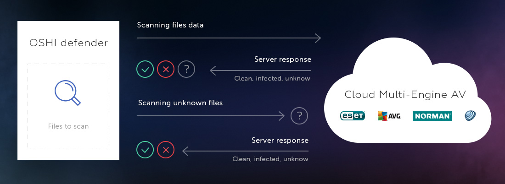

Always Be Protected with Cloud Antivirus
Malware and viruses are getting stronger and more elusive. They are becoming more difficult to detect, and tougher for antivirus software to identify. More and more people have to face the detriments cause by viruses and malware every day.
There is a solution to the virus and malware problem. Cloud antivirus is an effective virus scanning and protection program. OSHI Defender is a user program that runs on the cloud and utilizes the server program OSHI Cloud Scanner to scan a user’s system for viruses.

OSHI Cloud Scanner runs on a remote processor, meaning that it will not use up your computer’s processing power while running. This allows the antivirus software to offer powerful protection from viruses and malware.
OSHI Defender uses the OSHI Cloud Scanner, which provides users with the added security of four scanning engines on top of the standard multi-scanning technology. This helps cover a wide area of potentially infected areas and lets users feel safe that their cloud antivirus is working with a thorough scanning engine.
Because OSHI Cloud Scanner runs in the cloud, you have the added protection of remote scanning. Remote virus and malware scanning evaluates the system’s functions and programs from a location other than your computer. This gives you added protection, and essentially seals you off from ever coming in contact with potentially harmful viruses.
OSHI Defender offers numerous benefits as an anti-malware software. It is indispensable as a tool to keep malware, viruses, and malicious programs at bay.